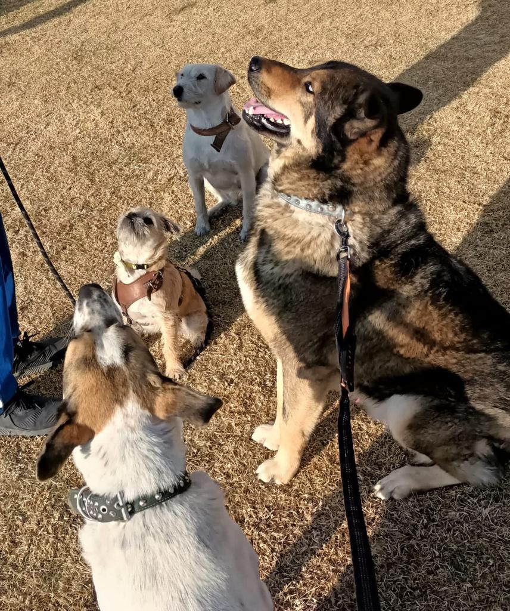
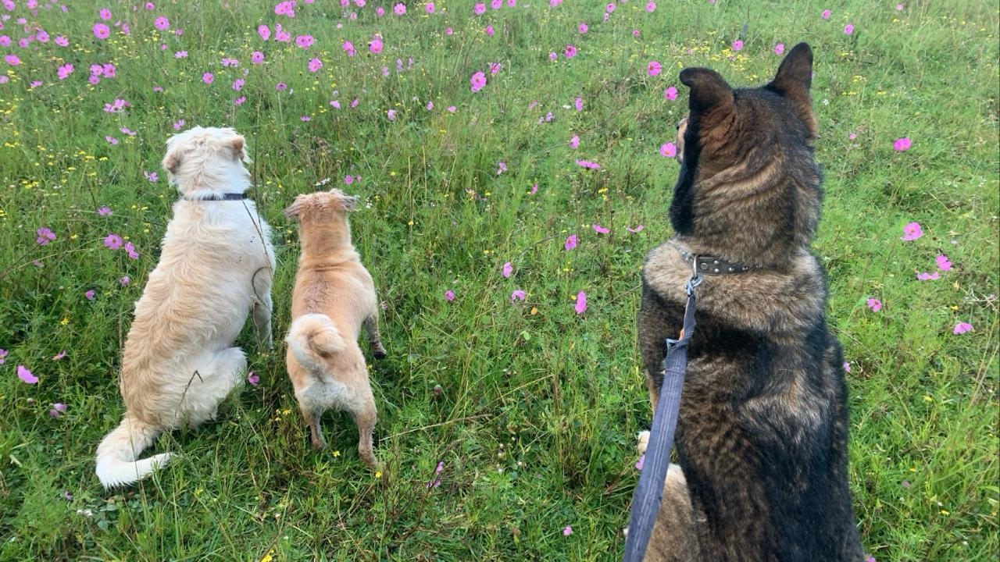
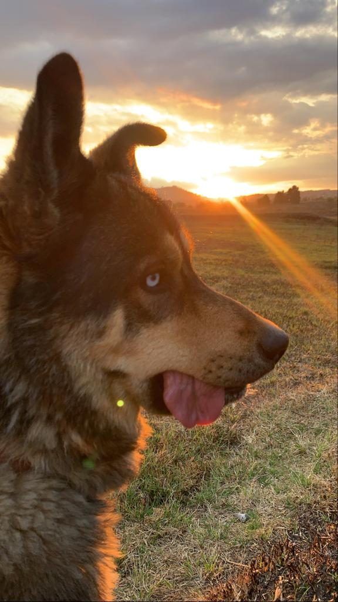
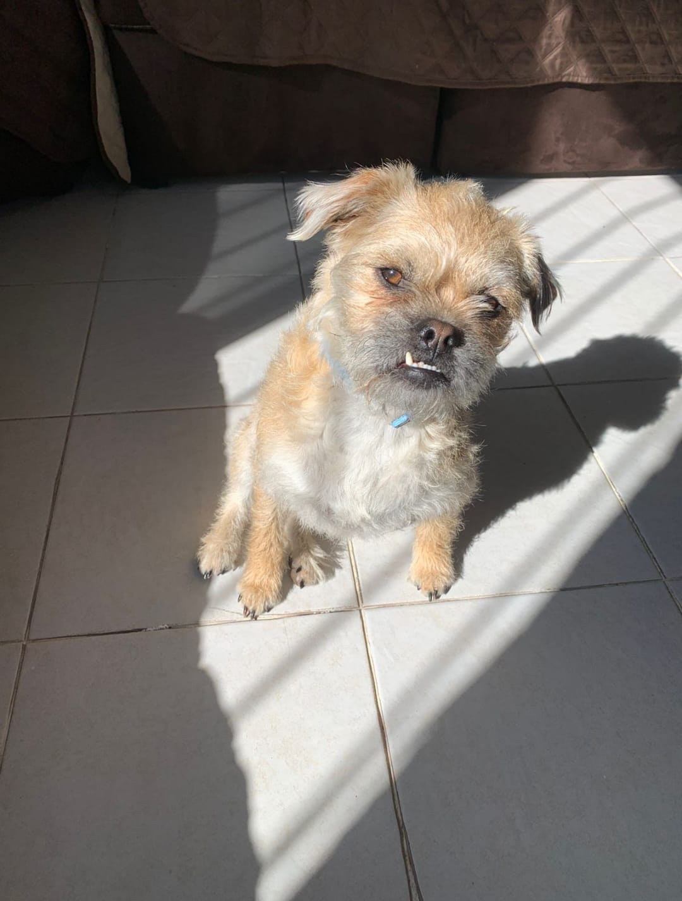
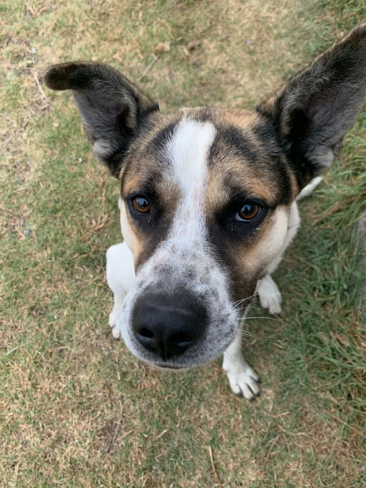
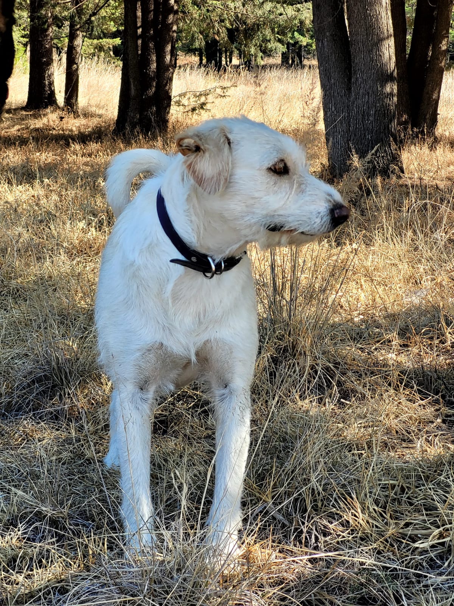
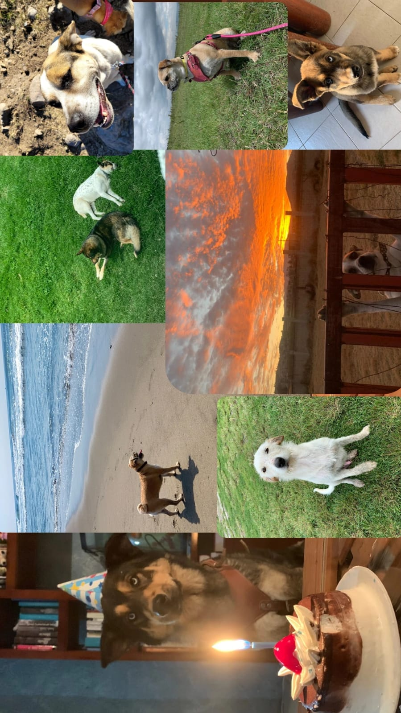

Hola :)) Soy Camila y hace 5 años conocí a mi primer mascota y cambió increíblemente mi vida, con el tiempo conocí a otras huellitas que me hacen muy feliz y te las quiero presentar


Ares

Edad: 4 años
Es el más grande, le gusta jugar y es muy cariñoso pero solo con la gente que quiere, siempre es protector
Hedda

Edad: 3 años
Es la más pequeña pero no dimensiona el peligro, su papá es de dudosa procedencia pero tiene rasgos de pug, su mayor enemigo son los sueteres pero es friolenta
Flaco

Edad: 7 años (dudosos)
Lo rescatamos de la calle por eso su nombre, es como el papá de los demás siempre lo siguen, le gustan mucho los abrazos y se deja acariciar por todos,
Silver

Edad: 3 años (dudosos)
Cuando era chachorrita la encontramos en la calle, es muy desconfiada porque fue maltratada pero siempre te sigue a todos lados y es cariñosa
Algunas fotitos de ellos :)

FRIENDLY REMINDER
Todos los animales son seres que merecen respeto y tener una buena vida, si esta en tus posibilidades adoptar y/o ayudar o conoces a alguien que lo necesite visita el link :)